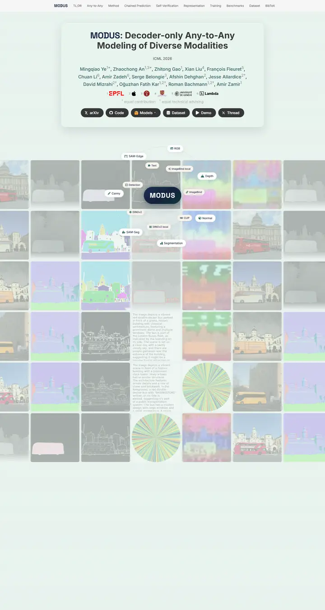

MODUS: Decoder-Only Any-to-Any Modeling of Diverse Modalities
A mint-glass display case in front of a slowly sliding wall of depth maps, edge maps and photos, with one navy pill at the centre of an orbit.

Checked against the rendered page. Hero title and orbit sizes are vh-based, so measured values hold for a 900px-tall viewport. The 42%-opacity mosaic lowers contrast around the card.
Why it is here
A distinctive hero: a mosaic of modality outputs with floating modality chips around a central wordmark, under a frosted title card. The washed-out overlay costs some clarity.
Overview
Color Palette
Typography
Inter
MODUS: Decoder-Only Any-to-Any Modeling of Diverse Modalities
Abstract · Method · Results · BibTeX — 0123456789
Space Grotesk
MODUS: Decoder-Only Any-to-Any Modeling of Diverse Modalities
Abstract · Method · Results · BibTeX — 0123456789
Cormorant Garamond
MODUS: Decoder-Only Any-to-Any Modeling of Diverse Modalities
Abstract · Method · Results · BibTeX — 0123456789
Spacing & Shape
Page Modules
Guidelines
More like this

Scaling Text-Rich Image Understanding via Code-Guided Synthetic Multimodal Data Generation
A university press catalogue: small-caps serif title, a colour wheel of specimens and an earthy bar chart.

DICE-BENCH: Evaluating the Tool-Use Capabilities of Large Language Models in Multi-Round, Multi-Party Dialogues
A Nerfies page with a game-box cover: a charcoal dice banner stamps the identity, then pastel brand-tinted pills and a grey carousel strip carry you into a quiet two-column method read.

TUNA: Comprehensive Fine-grained Temporal Understanding Evaluation on Dense Dynamic Videos
A benchmark that leads with its scoreboard: a fish-logo small-caps wordmark, a gradient venue line, then a full-width grey-headed leaderboard with zebra rows and blue model links.

Gesturing Toward Abstraction: Multimodal Convention Formation in Collaborative Physical Tasks
A seminar handout on clean paper: a big soft headline, six charcoal tabs, and a teal-and-magenta comic strip of hands explaining blocks.

Making Multimodal LLMs Reliable Chart Data Extractors: A Benchmark and Training Framework
A lab notebook opened to its best page: a framed video like a monitor bezel, emoji in the headline, and every figure pinned with a soft shadow.

What If Moderation Didn't Mean Suppression? A Case for Personalized Content Transformation
A quiet reading room with a purple ribbon on the lectern: slate sans headlines, Garamond prose, and one warm amber note pinned to the wall.